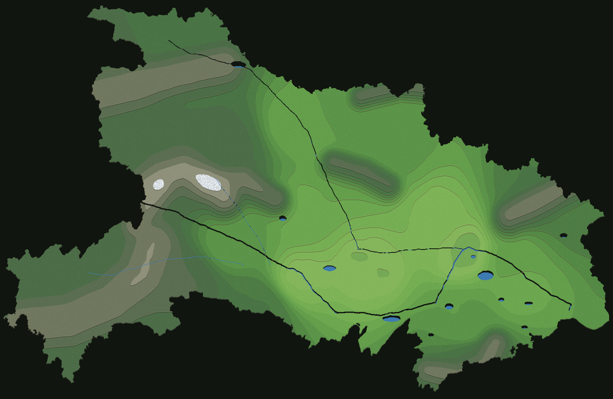
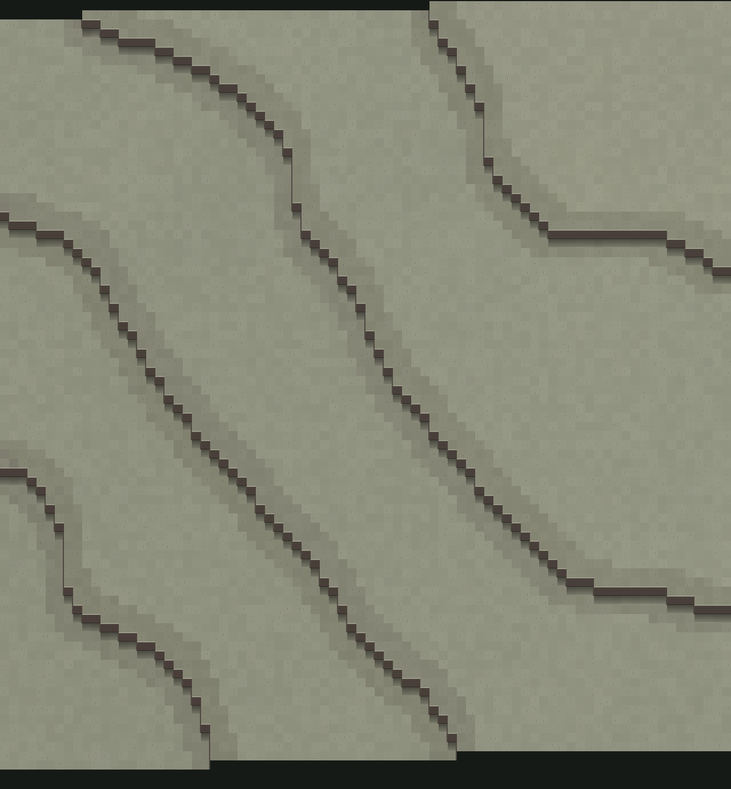
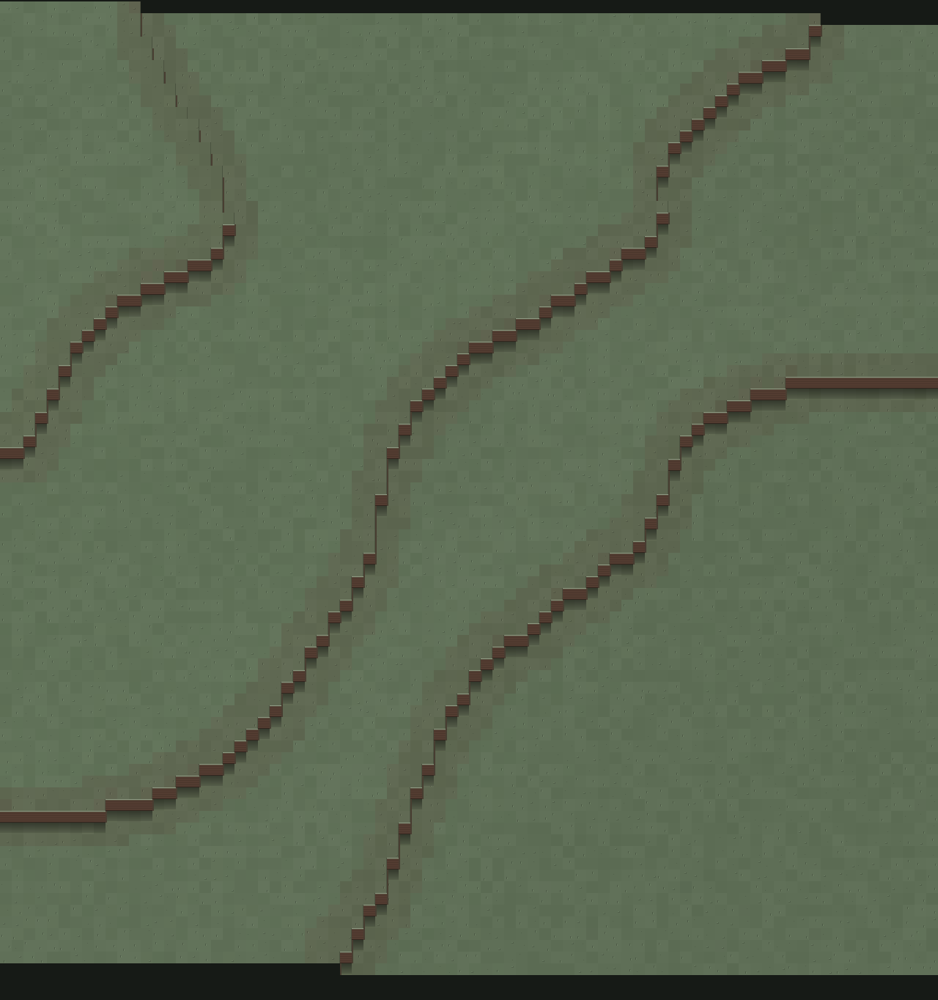
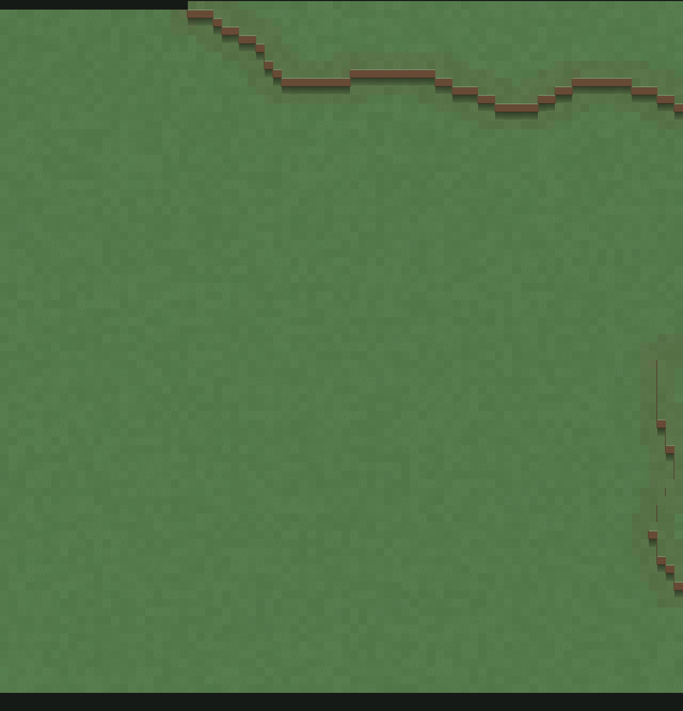

2 m / 格 基准 · 一格一崖 · 露土分界 —— 本页由 stardew-spec.mjs 直接生成，与烘焙代码同源
| 层 | 名称 | 高程区间 (m) | 层厚 | 露土色（分界线） | 占陆域面积 |
|---|---|---|---|---|---|
| T0 | 水面 | <26–26 | — | #60503c |
1.24% |
| T1 | 河漫滩 | 26–35 | 9 m | #b88858 |
0.77% |
| T2 | 一级阶地 | 35–45 | 10 m | #b28254 |
4.56% |
| T3 | 二级阶地 | 45–58 | 13 m | #aa7a50 |
5.62% |
| T4 | 岗地 | 58–75 | 17 m | #a2744c |
3.84% |
| T5 | 缓丘 | 75–98 | 23 m | #986c48 |
6.56% |
| T6 | 丘陵 | 98–128 | 30 m | #8e6444 |
10.73% |
| T7 | 高丘 | 128–168 | 40 m | #845c40 |
13.25% |
| T8 | 低山 | 168–225 | 57 m | #7a563c |
4.55% |
| T9 | 中山 | 225–305 | 80 m | #705038 |
5.04% |
| T10 | 中高山 | 305–430 | 125 m | #664a36 |
7.28% |
| T11 | 亚高山 | 430–640 | 210 m | #5e4434 |
16.85% |
| T12 | 高山 | 640–1000 | 360 m | #563e32 |
9.27% |
| T13 | 高山针叶 | 1000–1700 | 700 m | #4e382e |
10.02% |
| T14 | 草甸·裸岩 | 1700–2400 | 700 m | #463a34 |
1.44% |
| T15 | 雪线 | 2400+ | — | #605e5c |
0.29% |
层带只管配色与图例，不直接决定台阶：层厚 7–700 m 不等，一个 160 m 视口跨不过去。 真正画出台阶的是下面这套固定步长。
| 部位 | 像素 | 作用 |
|---|---|---|
| 唇边 | 1 px | 草皮断面，提亮 30%，是台地的"边界线" |
| 草根 | 1 px | 草色与土色 62% 混合，避免草直接切土 |
| 土体 | 12 px | 心土色，每 3 px 压一条暗纹（土层） |
| 脚影 | 1 px | 土色 × 0.60，崖脚收边 |
| 投影 | ≤14 px | 下方台面渐隐，k 从 0.56 → 0.90 |
只画朝南（+y）的崖面：3/4 俯视看不到东/西侧面；东西向落差用 2 px 土色侧棱带过， 否则 45° 台阶上的崖壁会断成一节节方块，整条崖线读成虚线。
| 坡度级 | 梯度区间 (m/m) | 代表 g | 相邻两级台阶水平间距 | 一屏 80 格可见级数 | 读数 |
|---|---|---|---|---|---|
| 台地 | 0.000–0.052 | 0.01 | — （不换级） | 0 | 3° 以下，一屏之内不换级 |
| 缓坡 | 0.052–0.213 | 0.11 | 38.0 格 / 608 px | 2.1 级 | 每 19–77 格升一级 |
| 中坡 | 0.213–0.466 | 0.32 | 12.7 格 / 203 px | 6.3 级 | 每 9–19 格升一级 |
| 陡坡 | 0.466–0.839 | 0.63 | 6.4 格 / 102 px | 12.5 级 | 每 5–9 格升一级，台阶密集 |
| 陡崖 | 0.839–∞ | 1.34 | 3.0 格 / 48 px | 26.8 级 | 间距 <5 格，多级并成直壁 |
run = STEP_M / (g · GRID_M) = 4 / g 格。
g=0.10 → 40 格一级（缓）；g=0.40 → 10 格一级（中）；g=0.70 → 5.7 格一级（陡）；g>1 → 间距不足 4 格，多级挤成一堵直壁。
崖线外侧另染 2 格土色（合计 3–5 格宽），这是"斜"的颜色读法；
softenR 只让崖线在相邻 0–2 格内错位、去掉刀切边，不改变任何一级的落差。
| 级 | 格距 | 全省格数 | 用途 |
|---|---|---|---|
| L0 | 2 m | 374,250 × 240,000 | 玩家尺度基准，流式加载，不烘焙 |
| L1 | 8 m | 93,563 × 60,000 | 区域视图 |
| L2 | 32 m | 23,391 × 15,000 | 县域 |
| L3 | 128 m | 5,848 × 3,750 | 市域拼图 |
| L4 | 500 m | 1,497 × 960 | 全省一张图（现有 hubei.bin） |
L0 是玩家尺度基准，只流式加载村落周边，不烘焙；L4 才是"一张全省图"。

全省 748.5 × 480 km，2 m/格 是 898 亿格，没有任何机器能一次烤出来，所以这张是 L4 降采样： 500 m/格。层带、配色、露土分界规则与 L0 完全同源，只有抬升按制图压缩—— 每个层带抬 2.0 px（1 格 × 2 px/格），15 级合计 30 px。 若沿用 L0 的 16 px/级，全省会堆成 240 px 高的千层饼，版面上再没有地形可言。 "2 m/格 + 16 px 一级"只在 L0 成立，看局部请对照下一节的样张。



下面这些数字不是规格表里抄的，是烘焙完直接遍历 lift 场统计出来的：逐列找"抬升发生变化"的行，量相邻两次换级的距离。它用来证明规格表没有和渲染脱节。
| 样张 | 高程 (m) | 高差 | 最大抬升 | 换级处数 | 相邻两级间距（格） |
|---|---|---|---|---|---|
shennongjia神农架东麓 1940 m（1 km 内起伏 202 m） |
1917–1953 | 36 m | 96 px | 97 | 最密 25 · 中位 35 · 最疏 44 |
wushan巫山余脉 878 m（起伏 126 m） |
864–889 | 25 m | 80 px | 71 | 最密 1 · 中位 27 · 最疏 44 |
tongbai桐柏山前 294 m（起伏 54 m） |
287–293 | 6 m | 48 px | 12 | 最密 1 · 中位 11 · 最疏 51 |
pingyuan江汉平原北缘 58 m（起伏 6 m） |
57–59 | 2 m | 16 px | 0 | 整片一级（无换级） |
间距 25–44 格（神农架、巫山）= 每 50–88 m 水平升一级，属于缓坡档； 桐柏山前中位 11 格，是丘陵密集台阶；江汉平原整片同一级，一屏之内不换级。 偶尔出现 1 格（如巫山），是真实陡坎：两级台阶紧邻，合起来就是一堵 32 px 直壁——这是地形本身陡，不是衔接失败。